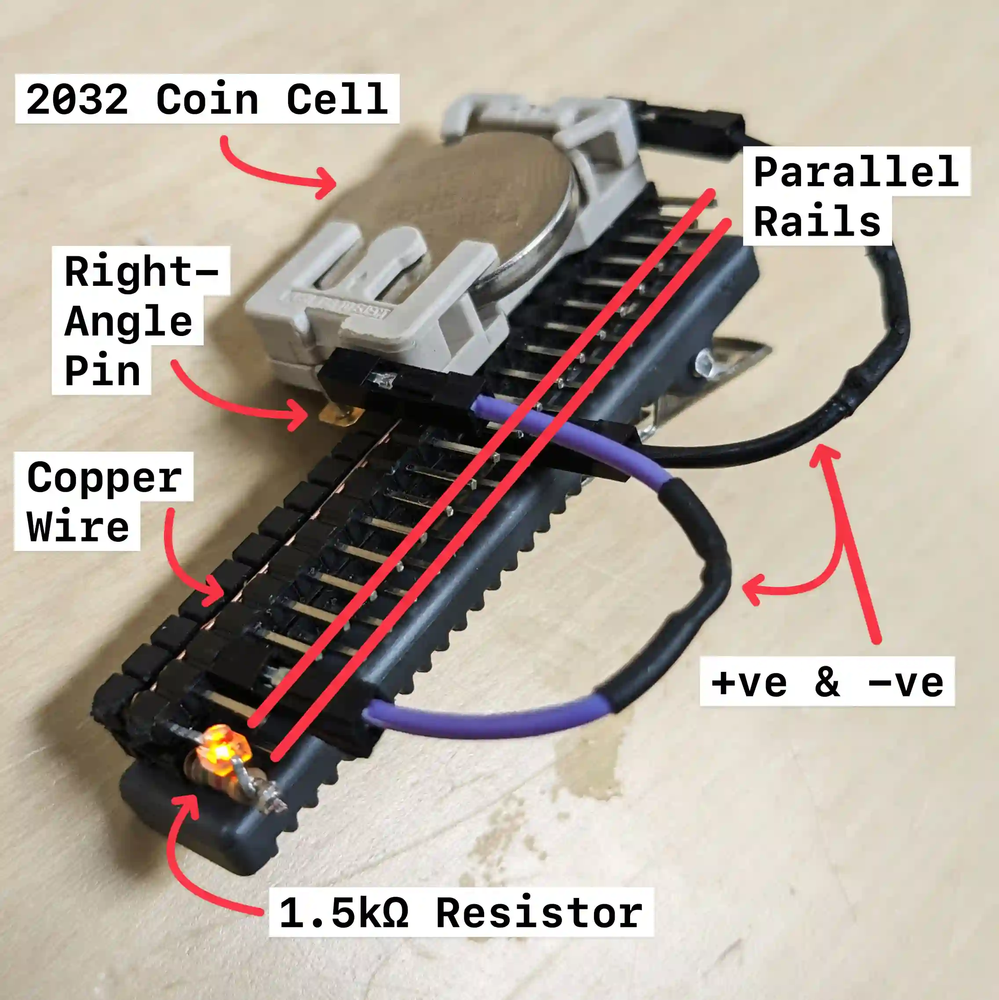

I halucinated someone with a hairclip of GPIO pins on the metro, so now I have a 2032 connected to a pinout and an indicator light.
A 2032 coin cell battery powers the light for about 2 weeks uninterupted thanks to the 1.5kΩ resistor. The two rails are connected by a winding copper wire, wrapped around the bottom of each pin three times, then capped off on the bottom with spare pin housing. The positive(purple) & negative(black) can plug into anywhere along their respective rails, this confiuration just looks nice.
The only bit of solder here is optional, on the coin cell holder, there are right-angle pins with their housing removed and short ends soldered to the frame, this is only there to keep the low profile while maintaing the ability to easily replace the jumper cables. Those cables are modified because I didn't have super-short ones on hand but anything could be used, even a hard-line cable could be made, it's just a real pain at this scale.
Hypervault is an html file with encryption capabilities! This particular file is a fork of another hypervault project with some css removed.